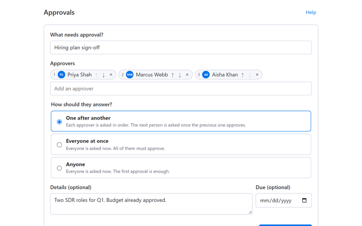
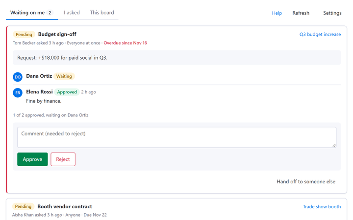
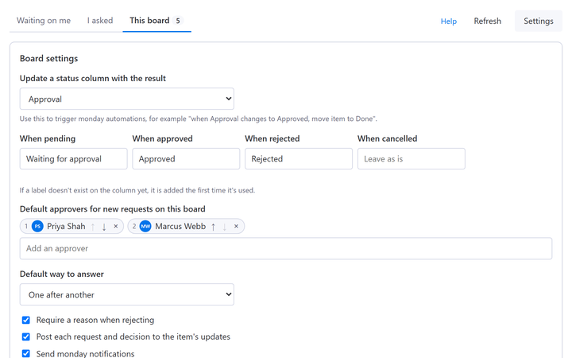

How to use Approvals
Ask anyone to approve a monday.com item, see what's waiting on you, and keep a record of every decision.
Before you start
- A monday.com admin installs the app once for the account.
- Anyone who isn't a viewer or guest can request and answer approvals. Viewers can see approvals but can't act on them.
- There's nothing to connect and no outside account to create.
1. Add Approvals to your items
- Open any item on a board.
- Click + next to the item's tabs, choose Apps or Explore more views, and add Approvals. It's added for every item on that board.
2. Request an approval

- On the item's Approvals tab, click Request approval.
- Say what needs approving, for example "Final design" or "Budget".
- Add one or more approvers. With more than one, choose how they answer:
- One after another: each person is asked in the order shown. Use the arrows to reorder.
- Everyone at once: all of them must approve.
- Anyone: the first approval is enough.
- Optionally add details and a due date, then click Send for approval.
Approvers get a monday notification. The request is also posted to the item's updates.
3. Approve or reject
Open the item's Approvals tab, or use the inbox below. Add a comment and click Approve or Reject. A reason is required to reject unless the board owner turned that off. Your decision is posted to the item's updates under your name.
Away or not the right person? Click Hand off to someone else and pick a colleague. The requester can also cancel a request.
4. Use the approval inbox

- On any board, click + next to the board's views, choose Apps, and add Approvals inbox.
- Waiting on me lists everything you need to answer, across all boards, sorted by due date.
- I asked lists your requests and where each one stands.
- This board lists every approval on the board, with status filters.
5. Connect approvals to automations (board owners and admins)

- In the Approvals inbox view, click Settings.
- Pick a status column. Set the label to use for pending, approved, rejected and cancelled. Labels that don't exist yet are added the first time they're used.
- Optionally set default approvers and the default way to answer for new requests on this board.
- Click Save settings, then build any monday automation on that column, for example "When Approval changes to Approved, move item to Done".
Plans
The free plan includes 10 approval requests a month per account, with every feature. Paid plans remove the limit. They are priced by your monday seat count, the exact price shows in monday's plan picker before you buy, and monday.com bills it. The free limit is for the whole account, resets on the 1st of each month, and a request counts once however many approvers it has. Open requests always keep working, even if you go over the limit.
Need help?
Email swagstudios.helpdesk@outlook.com with your account name and what you were doing. We usually reply within two business days.